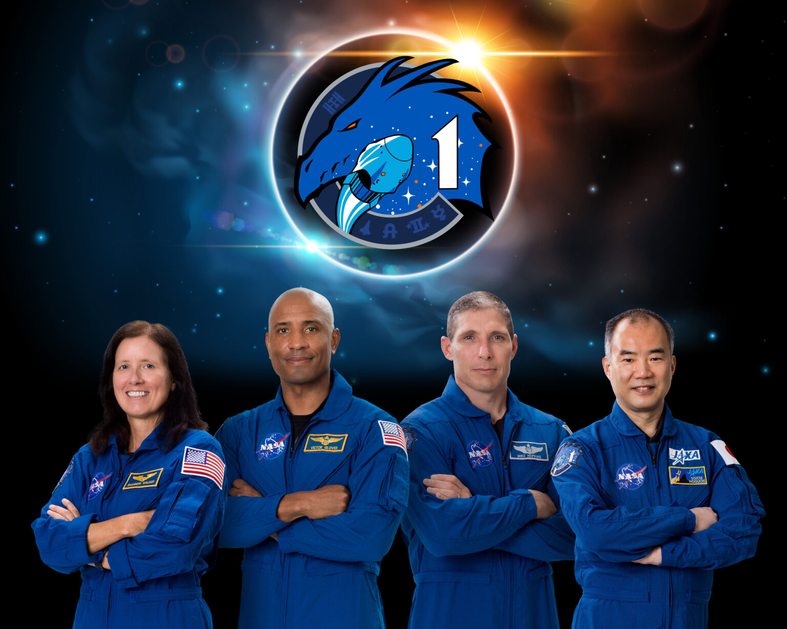
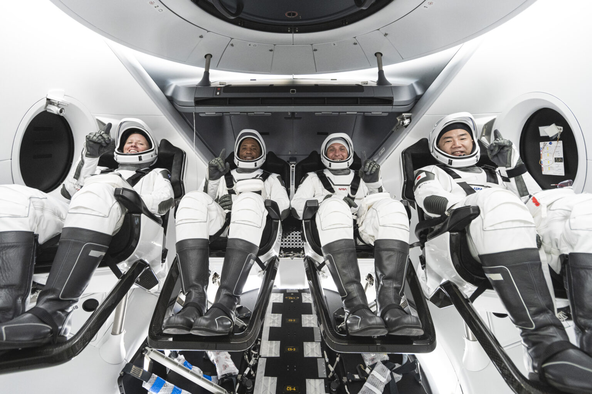
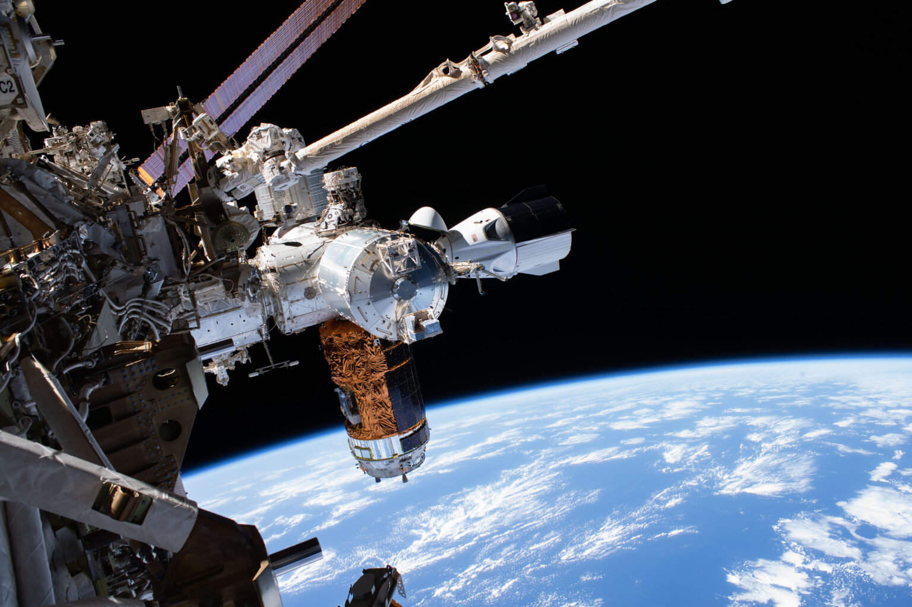

NASA和SpaceX开始了一项常规任务，宇航员乘坐美国火箭从美国本土前往国际空间站，这是NASA商业宇航员计划的一部分。NASA的SpaceX Crew-1任务是首次有四名宇航员乘坐商业飞船执行宇航员轮换任务，也是第一次有国际合作伙伴参与。
NASA宇航员迈克尔·霍普金斯、维克多·格洛弗、香农·沃克和日本宇宙航空研究开发机构(JAXA)的野口宗一将通过SpaceX的猎鹰9号火箭和载人龙飞船前往空间站。
Crew-1宇航员将飞船命名为“恢复力（Resilience）”，突出了参与此次任务的团队所表现出的奉献精神，并表明当我们一起努力时，我们所能取得的成就是无限的。Resilience以纪念他们的家人、同事和同胞而命名。
发射定于10月31日星期六，在佛罗里达州NASA肯尼迪航天中心的39A发射台进行。宇航员将在轨道实验室上长期停留，进行科学研究和维护工作。四名宇航员将于2021年春天返回。
NASA今年早些时候完成的SpaceX Demo-2测试飞行是载人龙飞船的最后一次演示飞行。这次试飞是为了验证SpaceX公司的人员运输系统，包括发射台、火箭、宇宙飞船和操作能力。NASA正在努力在Crew-1任务之前完成载人龙系统的认证。
霍普金斯和格洛弗于2018年被分配参加Crew-1任务，并开始在SpaceX的下一代人类航天器上进行工作和培训。沃克和野口今年年初加入了团队。
迈克尔·霍普金斯是载人龙飞船和Crew-1任务的指挥官。霍普金斯负责所有阶段的飞行，从发射到返回。他还将作为第64号远征队的飞行工程师登上国际空间站。2009年，霍普金斯被选为NASA宇航员，作为37号和38号远征队的长期成员，他在太空待了166天，完成了两次总计12小时58分钟的太空行走。霍普金斯出生在密苏里州的黎巴嫩，在密苏里州里奇兰郊外的一个农场长大。他拥有伊利诺伊大学航空航天工程学士学位和斯坦福大学航空航天工程硕士学位。在加入NASA之前，霍普金斯是美国空军的一名飞行测试工程师。
维克多·格洛弗是载人龙飞船的飞行员，也是这次任务的副指挥官。格洛弗负责航天器系统和性能。他还将是长期的空间站工作人员。2013年，他被选为宇航员，这将是他的第一次太空飞行。这位加利福尼亚人拥有通用工程学学士学位、飞行测试工程学硕士学位、系统工程学硕士学位和军事操作艺术与科学硕士学位。格洛弗是一名海军飞行员，曾是F/A-18大黄蜂、超级大黄蜂和EA-18G咆哮者飞机的试飞员。
香农·沃克是机组1号的任务专家。作为一名任务专家，她将与指挥官和飞行员密切合作，在飞行的动态发射和重返大气层阶段监控飞行器。她还将负责监视时间表、遥测和消耗品，如燃料和大气水平。一旦进入空间站，沃克将成为第64号远征队的飞行工程师。沃克于2004年作为NASA的宇航员，作为副驾驶员乘坐俄罗斯联盟号TMA-19宇宙飞船进入国际空间站，并在轨道实验室中度过了161天时间。在她停留期间，在人类研究、生物和材料科学等领域进行了130多次微重力实验。沃克是休斯敦人，1987年在莱斯大学获得物理学学士学位，1992年和1993年分别在莱斯大学获得空间物理学硕士和博士学位。
野口宗一还将担任机组1号的任务专家，与指挥官和飞行员合作，在飞行的动态发射和重返大气层阶段监控飞行器，并对时间线、遥测和消耗品进行监控。野口宗一还将成为国际空间站的一名长期工作人员。1996年5月，他被日本国家空间发展机构(现为日本航空航天探索机构)选为宇航员候选人。野口宗一是两次太空飞行的资深人士。在2005年的STS-114航天飞机任务中，野口宗一成为第一个在空间站外进行太空行走的日本宇航员。在这次任务中，他总共进行了三次太空行走，累计行走时间达20小时5分钟。2009年，他搭乘联盟号飞船返回空间站，担任长期工作人员。载人龙飞船将是野口勇飞到轨道实验室的第三艘飞船。
载人龙飞船将由猎鹰9号火箭从39A发射台升空，载人龙飞船将把4名宇航员的时速提高到1.7万英里，并将其送上国际空间站的拦截轨道。一旦进入轨道，宇航员和SpaceX任务控制中心将监控一系列自动操作，这些操作将把Crew-1宇航员引导到他们的新轨道上。在轨道上飞行大约一天后，载人龙飞船将进入对接地点，与空间站对接。载人龙飞船被设计为自动对接，如果有必要，宇航员可以手动控制和驾驶飞船。
成功对接后，Crew-1宇航员将在空间站受到NASA宇航员凯特·鲁宾斯、谢尔盖·里兹科夫和俄罗斯宇航局宇航员谢尔盖·库德-斯维尔奇科夫的欢迎。随着第64号远征队的到来，空间站的宇航员将首次扩大到7人，从而增加了宇航员用于研究的时间。
用于此次飞行的载人龙飞船将继续停靠在空间站，进行长达六个月的长时间太空站探险。Crew-1宇航员宇航员将在国际空间站上进行植物学、癌症和科技等领域新的和令人兴奋的科学研究。
萝卜将在太空中生长。这种植物营养丰富、生长迅速，在基因上与拟南芥相似。拟南芥是一种在微重力环境下经常被研究的植物。研究结果可以帮助优化这些植物在太空中的生长，并提供对它们的营养和味道的评估。科学家们正在利用微重力测试基于信使核糖核酸(mRNA)治疗白血病的药物。一种即将送往空间站的新型座便器具有许多功能，这些功能可以改善当前的空间座便器操作，并帮助我们为未来的任务做好准备，包括去月球和火星的任务。
在轨道实验室期间，Crew-1的宇航员将看到一系列无人驾驶的航天器，包括诺斯罗普·格鲁曼公司的天鹅座、下一代SpaceX货运龙飞船以及波音CST-100星际客机进行到空间站的无人飞行测试。他们还将进行各种太空行走，并欢迎俄罗斯联盟号飞船和2021年的下一代SpaceX载人龙飞船宇航员。
在任务结束时，载人龙飞船与四名宇航员将自动脱离空间站，离开空间站，重新进入地球大气层。在佛罗里达海岸溅落后，宇航员将由SpaceX的回收船在海上接回，并将在岸上登上飞机返回休斯顿的约翰逊航天中心。
Crew-1任务是NASA商业船员计划的重要一步。长期运行的商业人员轮换任务将使NASA能够继续进行该站上进行的重要研究和技术调查。这项研究使地球上的人们受益，并从该机构的阿耳忒弥斯计划开始，为未来的月球和火星探索奠定了基础，该计划将在2024年使第一位女性和下一位男性登上月球表面。